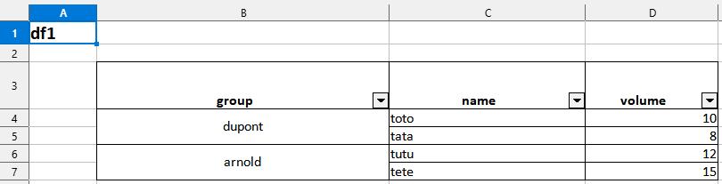

Examples gallery
Table of Contents
- Simply export a data frame to an xlsx file
- Export a list of several data frames to an xlsx file (each data frame in a different sheet)
- Export a data frame to an xlsx file (merging modalities for one column)
- Export a data frame to an xlsx file (merging modalities for several columns)
- Export a data frame to an xlsx file (splitting the data frame into groups)
- Export a list of several data frames to an xlsx file (several data frames in a same sheet)
- Export a list of data frames to an named xlsx file by specifying which data frame goes in which sheet, styling each column, giving a title and footnotes…
Let’s define an export folder that will be the same for all the examples on this page
mypath <- tempdir()Important : in this vignette, all examples use
%>%to pass theobjectargument in thetoxlsx()function, but it works interchangeably with these 3 syntaxes below :
1. Simply export a data frame to an xlsx file
iris |> toxlsx(path = mypath)Preview of the xlsx file in LibreOffice Calc :
2. Export a list of several data frames to an xlsx file (each data frame in a different sheet)
Preview of the xlsx file in LibreOffice Calc :

3. Export a data frame to an xlsx file (merging modalities for one column)
# Create df1
df1 <- data.frame(
group = c("dupont","dupont","arnold","arnold"),
name = c("toto","tata","tutu","tete"),
volume = c(10,8,12,15)
)
# Export
df1 |> toxlsx(path = mypath, mergecol = "group")Preview of the xlsx file in LibreOffice Calc :

4. Export a data frame to an xlsx file (merging modalities for several columns)
sorted_mtcars <- mtcars[
order(mtcars$gear, mtcars$am),
c("gear", "am", setdiff(names(mtcars), c("gear", "am")))
]
sorted_mtcars |>
toxlsx(path = mypath, mergecol = c("gear", "am"))Preview of the xlsx file in LibreOffice Calc :

5. Export a data frame to an xlsx file (splitting the data frame into groups)
df1 |> toxlsx(path = mypath, bygroup= "group", groupname=TRUE)
6. Export a list of several data frames to an xlsx file (several data frames in a same sheet)
tb1 <- data.frame(tables = c(rep("iris",5),rep("cars",2)),
var = c(names(iris),names(cars)))
tb2 <- data.frame(tables = c("iris","cars","cars"),
rownumber = c(150,50,32))
list(tb1,tb2) |>
toxlsx(tosheet = "mydata",
mergecol = "tables",
footnote1 = list("tb1" = "The data set contains 3 classes of 50 instances each, where each class refers to a type of iris plant.",
"tb2" = "The data give the speed of cars and the distances taken to stop. Note that the data were recorded in the 1920s."),
footnote2 = list("tb1" = "Predicted attribute: class of iris plant.",
"tb2" = "Data recorded in the 1920s"),
footnote3 = list("tb1" = "Source : R.A. Fisher",
"tb2" = "Source : M. Ezekiel"),
path=mypath)Note that the arguments tosheet and
mergecol, being length-one character vectors, are recycled
for all data frames of the list.
Preview of the xlsx file in LibreOffice Calc :

7. Export a list of data frames to an named xlsx file by specifying which data frame goes in which sheet, styling each column, giving a title and footnotes…
iris <- iris %>% head()
cars <- cars %>% head()
list(iris,cars) |>
toxlsx(tosheet = list("iris" = "first",
"cars" = "second"),
title = list("iris" = "Head of iris",
"cars" = "Head of cars"),
mergecol = list("iris" = "Species",
"cars" = "speed"),
# The `columnstyle` argument is optional in toxlsx().
# It is used only if you want to specify the format of each column
columnstyle = list("iris" = list("c1" = "decimal",
"c2" = "decimal",
"c3" = "number",
"c4" = "number",
"c5" = "character"),
"cars" = list("c1" = "number",
"c2" = "number")),
footnote1 = list("iris" = "The data set contains 3 classes of 50 instances each, where each class refers to a type of iris plant.",
"cars" = "The data give the speed of cars and the distances taken to stop. Note that the data were recorded in the 1920s."),
footnote2 = list("iris" = "Predicted attribute: class of iris plant.",
"cars" = "Data recorded in the 1920s"),
footnote3 = list("iris" = "Source : R.A. Fisher",
"cars" = "Source : M. Ezekiel"),
filename = "Results",
path = mypath)The equivalent with the {openxlsx} syntax would be much longer and more painful to write.
Preview of the xlsx file in LibreOffice Calc :